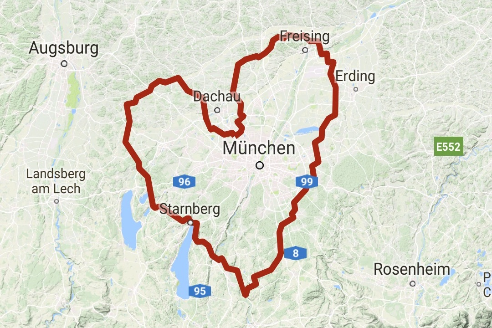
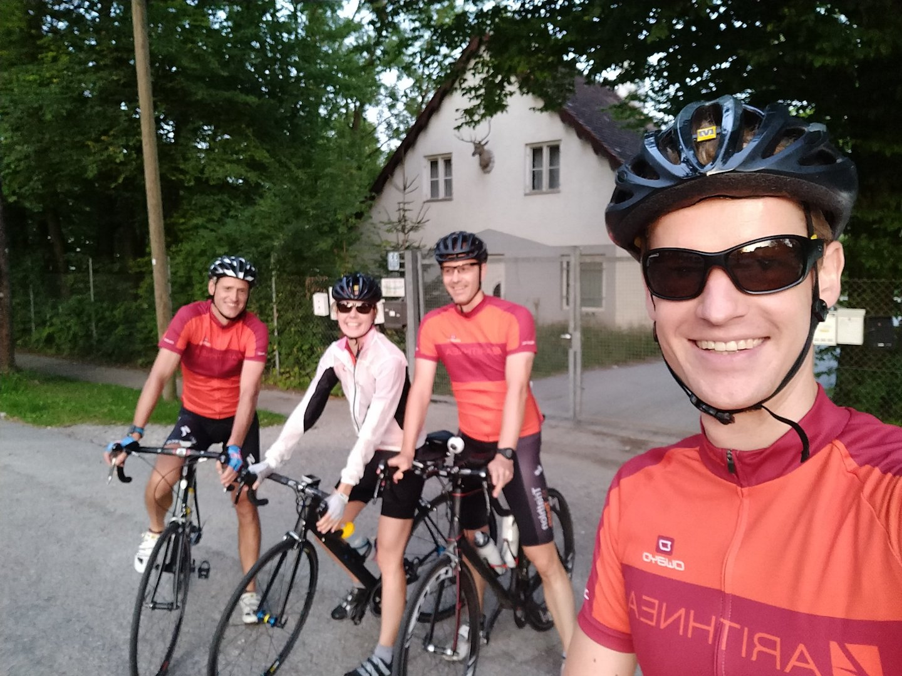
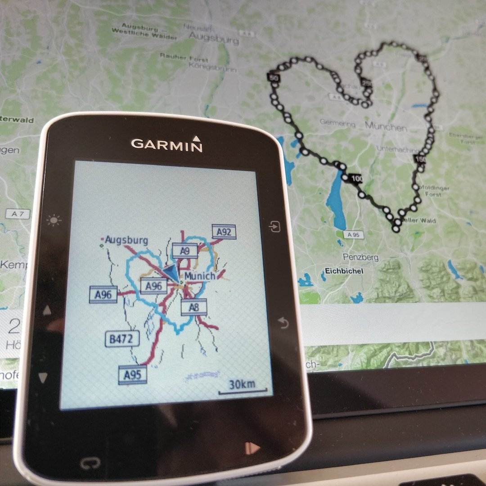

Die erste und einzigartige 259-Km-Herzrunde rund um München!
Wenn auch kurzfristig angesetzt, so haben wir alles mit viel Liebe – zum Detail – und von langer Hand geplant: den ersten und einzigartigen „I love Munich Brevet!“. Auf 259 Kilometern geht es einmal gegen den Uhrzeigersinn rund um die schönste Stadt nördlich Italiens. Es erwarten uns keine Pässe oder kilometerlangen Anstiege, sondern jede Menge Cafés und Labemöglichkeiten. Gleichwohl wir dafür wohl nicht viel Zeit haben werden – time flys, und mit ihr das Tageslicht.

Da gut 250 Km mal nicht einfach so und locker weg gefahren werden können, sollte man die Distanz und vor allem die vielen Stunden im Sattel nicht unterschätzen.
Das offizielle Go vom Coach liegt vor, los gehts!

Die Route ist geplant, das Navigieren übernehme ich. Unsere Mitstreiter brauchen nur sich selbst, die Maschine, gute Beine, hochprozentiges ISO und jede Menge Powergels – und Spaß und gute Laune.

Nach Zielankunft nutzen wir eine der vielen Möglichkeiten, mit allerletztem Schwung die leeren Energiespeicher in nahegelegenen Gasthäusern zu füllen.
Wir freuen uns RIESIG, das wir zusammen das wohl schönste Streckenprofil rollen. Es ist eines der Saison-Highlights 2017.
Storytelling und Live-Ticker powered by Twitter
#ILoveMunichBrevet
12:33 – 19. Aug. 2017
Das nächste große – richtig große – Highlight wartet. Hashtag #ILoveMunichBrevet schon mal speichern!
12:46 – 19. Aug. 2017
Kleiner Ausblick auf unser #ILoveMunichBrevet Höhenprofil. Mit Halbzeit, also bei Kilometer 130, gehts nur noch 130km bergab.

06:30 – 20. Aug. 2017
Ich hoffe auf Kaiserwetter am #Ötztaler Wochenende. Der erste #ILoveMunichBrevet startet kommenden Sonntag (fast) zeitgleich.
10:54 – 20. Aug. 2017
#ILoveMunichBrevet im direkten Vergleich zum #Ötztaler? Weniger Höhenmeter, deutlich mehr Kilometer.
13:24 – 22. Aug. 2017
„Ohne Mampf kein Dampf!“ Sollte genug Pulver für Sonntag sein #ILoveMunichBrevet

08:33 – 23. Aug. 2017
Vorsichtiger Wettercheck für Sonntag: 29° #ILoveMunichBrevet
09:31 – 26. Aug. 2017
Sonntag: 26° ideales Wetter für 259+ Kilometer #Rennradfahren #ILoveMunichBrevet
16:45 – 26. Aug. 2017
CarboLoading für morgen #ILoveMunichBrevet

18:30 – 26. Aug. 2017
Auf 259km geht es morgen ab 06:30 einmal gegen den Uhrzeigersinn rund um #Munich, die schönste Stadt nördlich Italiens #ILoveMunichBrevet
23:09 – 26. Aug. 2017
Bitte erinnert mich morgen Abend @Strava auf ein erstklassiges #ILoveMunich #StravaArt hinzuweisen #ILoveMunichBrevet #München #Munich

05:04 – 27. Aug. 2017
Guten Morgen #München, guten Morgen Twitter. Es wird ein verdammt langer 259-Km-Tag! #ILoveMunichBrevet
05:13 – 27. Aug. 2017
Pssst….An- und Abfahrt zum Start- und Ziel unterschlagen. Korrektur also: Ein mindestens 260-Km-Tag! #ILoveMunichBrevet
05:22 – 27. Aug. 2017
Die Taschen voll machen #ILoveMunichBrevet

05:23 – 27. Aug. 2017
Erstmal ordentlich frühstücken und alles rein was rein geht so früh am Morgen #ILoveMunichBrevet
06:27 – 27. Aug. 2017
Es ist angerichtet. 06:30 gehts los #ILoveMunichBrevet
06:29 – 27. Aug. 2017
Die erste und einzigartige 259-Km-Herzrunde rund um #München wird geil, richtig geil! #ILoveMunichBrevet

06:30 – 27. Aug. 2017
06:30 los gehts #ILoveMunichBrevet
06:45 – 27. Aug. 2017
Mal eben satte 15min vorm #Ötztaler gestartet #ILoveMunichBrevet
08:11 – 27. Aug. 2017
Ich würde euch ja liebend gerne ein #Garmin Livetracking anbieten, allerdings packt der Akku so lange Tage einfach nicht #ILoveMunichBrevet
13:25 – 27. Aug. 2017
Team Tempohasen frisch und vorfreudig kurz vor dem Start heute früh #ILoveMunichBrevet

13:27 – 27. Aug. 2017
Jetzt große 🍝-PAUSE! Dann nur noch unter 100km! #ILoveMunichBrevet
14:21 – 27. Aug. 2017
Schlusspurt, ab jetzt gibts Bier #ILoveMunichBrevet

18:56 – 27. Aug. 2017
Jetzt 🍻! Geiler Scheiß 260km #ILoveMunichBrevet ein geiles Ding!

19:05 – 27. Aug. 2017
Da ist das Ding! Welch ein grandioser 🚴Tag! Danke! #ILoveMunichBrevet #StravaArt #München #Munich #Strava"